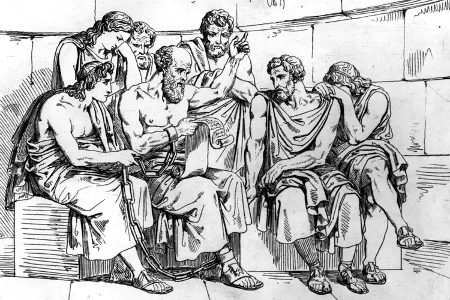

Socráticos
Los otros socráticos

Escuelas socráticas
Sócrates es un personaje crucial en la filosofía antigua, a los filósofos anteriores se les llama habitualmente presocráticos, y a partir de él se pueden considerar dos tendencias: por un lado la tendencia oficial, cuyas grandes figuras son Platón y Aristóteles junto con sus seguidores y escuelas. Por otro lado una tendencia más marginal y variada pero menos conocida, que comienza con ciertos discípulos de Sócrates llamados genéricamente socráticos menores.
En general se consideran corrientes de tendencia socrática a los siguientes:
Los cínicos, con Antístenes y Diógenes como iniciadores.
La escuela cirenaica que fundó Arístipo.
La escuela megárica iniciada por Euclides
Otras escuelas menos conocidas como la de Elis fundada por Fedón (a quién Platón dedica uno de sus diálogos, precisamente el que narra la muerte de Sócrates), o la de Eretria fundada por Menedemo.
Todas estas escuelas tenían diversos puntos en común, principalmente los que tienen que ver con la vinculación de su discurso con su forma de vida. Cada corriente se caracteriza por la elección de una forma de vida que se hace modélica en sus fundadores.
Fuentes antiguas
No se ha conservado ningún escrito de los propios pensadores de estas escuelas, solo contamos con fuentes secundarias, principalmente:
Como casi siempre, Diógenes Laercio, en este caso su libro II de las "Vidas de los filósofos ilustres" dedica capítulos a Arístipo de Cirene, Fedón de Elis, Euclides de Megara, Estilpón de Megara y Menedemo de Eretria.
También hay comentarios importantes al respecto en la obra de Sexto Empírico, "Contra los profesores" y en algunos otros escritos de Plutarco.
Algunos comentarios breves de Platón, Aristóteles, Cicerón o Seneca.
Platón: “Fedón”
En este diálogo Platón expone las últimas horas de Sócrates por medio de su discípulo Fedón (Escuela de Elis) y nos dice quienes estaban presentes, entre los que destacan: Antístenes (Escuela cínica), Euclides (Escuela de Megara) y Arístipo (Escuela cirenaica). Curiosamente Platón no estaba porque se encontraba enfermo.
Todos los fundadores de las escuelas socráticas menores estaban presentes en ese momento tan importante, discutiendo sobre ¡la inmortalidad del alma!
<- Atrás